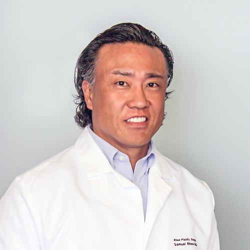

Achieving Natural Looking Results
Fat grafting harvests fat from one part of the body where an excess exists and then places it in another part of the body where the additional bulk is used for cosmetic and anesthetic purposes.
- Smooth aged hands
- Fill wrinkled, creased faces
- Augment gluteal areas (buttocks)
- Enlarge breasts
- Generally, 40-60% of the transferred fat persists permanently.
- What are the risks of fat grafting?
- Complications from fat grapfting are rare but can include infection, assymmetry, fatty cysts, hematoma, fat embolism, seroma, and permanent discoloration from the bruises.
How is fat grafting performed?
Fat grafting is an office-based procedure that is usually performed under local topical anesthesia. Fat is harvested through liposuction. The fat is then processed and injected into the target site.
- What should I expect postoperatively?
- You can expect to be swollen, bruised and sore at both the donor site and the treatment site. Dr. Rhee will tell you how to care for the treatment area, including staying out of the sun while you are healing.
- When will I be ale to see the results?
- Your surgical areas may be a bit swollen at first and it might look like you were over-filled. Most of the time extra fat is injected bacause notall of it will survive in its new location. The swelling will subside and the final results will emerge in three to four months.

Dr. Samul Rhee M.D.
Rhee Plastic Surgery
Bergen Cosmetic Surgery
Meet Dr. Rhee...
Dr. Samuel Rhee is a noted plastic surgeon in the greater New Jersey and New York area, with over 10 years of experience focusing on cosmetic surgery of the face, eyes, nose, body and breast.
"Simply, a better plastic surgery experience," reflects Dr. Rhee's core belief that all patients receive outstanding and sensitive cosmetic care - no hype, no hard sell.
Prior to transition to private practice, Dr. Rhee was an assistant professor of plastic surgery at Weill Cornell Medical College/NewYork-Presbyterian Hospital and Director of the Craniofacial Surgery Program.
Board certified by the American Board of Plastic Surgery, Dr. Rhee's has privileges at Valley Hospital (Ridgewood, NJ), and Hackensack University Medical Center.